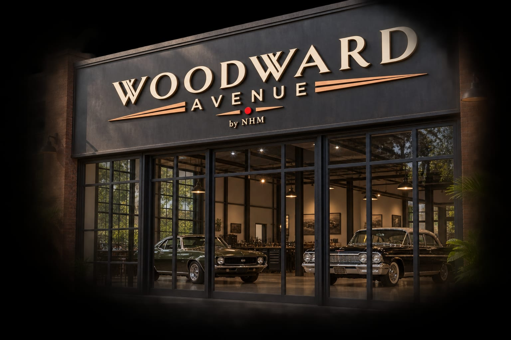
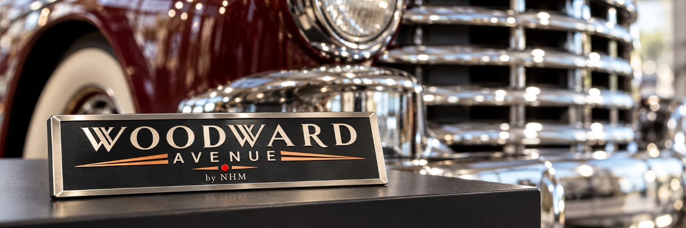
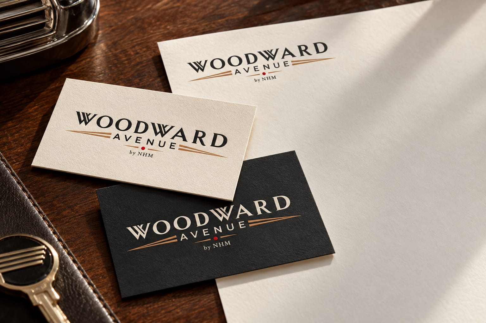

American automotive heritage · a future NHM marque
Preserve the car. Preserve its story.
Woodward Avenue by NHM is a concept for the careful documentation and preservation of American classics. Our immediate work is developing NHM's approach to cars already in India. Woodward Avenue is not yet sourcing, selling, importing or servicing vehicles.
- ProvenanceRecord what is known
- OriginalityKeep factory identity
- PreservationIntervene with care
- DisclosureMark gaps and changes

Already in India
American classics that are already here.
Some American classics are already in India. If Woodward Avenue develops into an operating marque, these cars and their histories would be the sensible place to begin. The ideas below describe a future approach, not services available today.
Our intended standard is to verify import and registration records before any future purchase, sale or work, and to disclose unresolved gaps.
-
01
Reconditioned cars for sale
We plan to find American classics that are already registered in India, buy them once their papers check out, recondition them and sell them with a full file:
- import papers, such as the bill of entry and proof of customs duty paid, checked
- registration certificate and ownership history
- VIN and engine numbers matched to the papers
- reconditioning work recorded, with photographs
- what is original and what isn’t, stated plainly
-
02
Documentation for owners
Many older imports have papers spread across owners, offices and states. The proposed record would assemble available import documents, registration history and service records, mark gaps, and identify questions for specialist review.
-
03
Service and reconditioning
From routine servicing to a full recommissioning after years off the road:
- inspection and a written report before any work
- mechanical, electrical, bodywork and trim reconditioning
- original and reproduction parts sourced from the US
- a record of every job, added to the car’s file
-
04
Re-registration
Where a car needs it, we prepare the papers and work through the process with the transport authority. Approval rests with the authority, and requirements vary by state.
- transfer of ownership
- moving the registration to another state, with a no-objection certificate from the original authority
- renewal of registration and fitness for older cars
- vintage registration, where the car qualifies
Services
Importing from the US.
For a car still in the US, you choose it and buy it in your own name. We help you find the right one, inspect it before you commit, ship it to India, and look after it once it’s home.
Woodward Avenue is launching. Partners in the US and India are being put in place, and we aren’t taking clients yet.
-
01
Find the car
A possible future service could begin with a model, condition and budget brief, then research eligible cars and arrange independent inspection before any purchase.
-
02
Inspect it before you buy
Before you bid or pay, an inspector sees the car in person. You receive a written report with photographs covering:
- the frame, floors, rockers and suspension mounts
- VIN and engine numbers, checked against the title
- a cold start and the engine running
- bodywork, paint and signs of accident repair or rust work
- service records and the title history
-
03
You buy it, with us beside you
You buy the car in your own name and pay the seller directly. India’s vintage import policy is for the car’s actual user, so the car is yours from the start. Before you commit, we explain the listing, the fees and the likely landed cost.
-
04
Ship it to India
Once you’ve paid, we take care of getting the car home:
- collection from the seller and transport to a US port
- title transfer and US export paperwork
- container shipping and marine insurance
- customs clearance at the Indian port, through a licensed broker
- vintage registration with your transport authority
-
05
Service and maintain it
A fifty-year-old car needs people who know it. Once it’s home, we:
- check it over on arrival and fix anything the journey turned up
- service it regularly and keep a record of the work
- source original and reproduction parts from the US
- help with restoration when it’s needed
Listings
American classics to research.
A 1976 or older model may pass an initial age screen in 2026, but the specific car must be more than 50 years old from first registration and meet the other vintage conditions. These are profiles of cars we can help you find, not stock for sale.
See all listingsLuxury cruisers
Sports and muscle

Original badges stay on the car. Ours goes on the stand.
Every car keeps its factory emblems, finishes and numbers. We record what’s original and what isn’t, and we never replace one with the other. The Woodward Avenue name lives on display furniture and paperwork, not on the car.
The concierge
A possible future import pathway.
This is a planning illustration only. No import concierge service is currently offered; eligibility, costs, partners and regulatory requirements would need checking for each car.
Find
A future search would research US auctions, dealers and collectors for potentially eligible cars.
Inspect
Before you bid, an inspector sees the car in person and reports on the frame, engine, bodywork and papers.
You buy
You buy in your own name, as India’s vintage import rules require. We explain every fee first.
Ship
We plan to coordinate collection, export papers, shipping, customs clearance and an application for vintage registration in India; approval rests with the authorities.
Maintain
Later care would depend on suitable specialists, agreed scope and parts availability.
The specific car must be more than 50 years old from first registration and meet the other vintage conditions. Model year is only an initial screen.

Provenance
A car is only as good as its paperwork.
A future vehicle record would assemble available evidence in plain English, with gaps marked. It would document rather than certify provenance:
- Title and numbers, decoded
- Title history, VIN and trim tag, and the build sheet or window sticker where it survives.
- Ownership and service
- Every record we can recover, in date order, with gaps marked.
- Export and import
- Export papers, the bill of lading and a landed-cost statement.
Currency guide
Plan a US purchase in rupees.
Convert a USD asking price to an indicative INR amount. Shipping, insurance, duties, clearance and concierge fees are separate and require written quotes.
Checking reference rates…
Daily reference rates from Exchange Rate API. Indicative only; confirm the transaction rate with your bank or broker.
Contact
Enquiries open soon.
Woodward Avenue is a future NHM marque and is not taking clients. For now, the site shares our design direction and research on American classics.
Until then, NHM’s buying guide explains the process, from checking eligibility to customs and registration in India. The steps are the same for an American car.
Read the buying guidePart of Nihon Heritage Motors
NHM is developing a preservation-led approach to Japanese classics already in India, beginning in Goa. Woodward Avenue will follow that foundation.